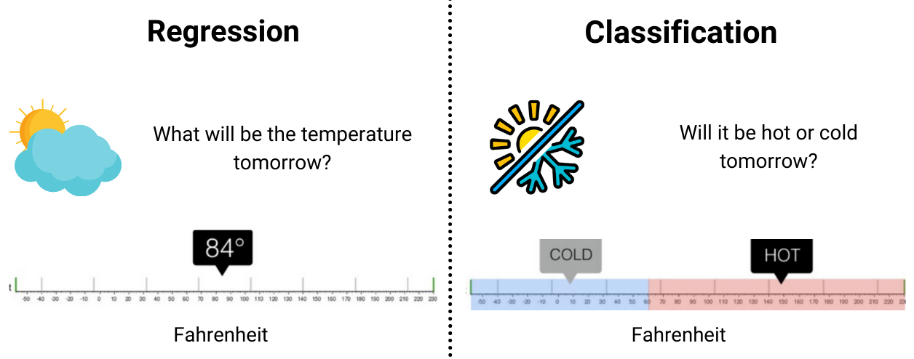
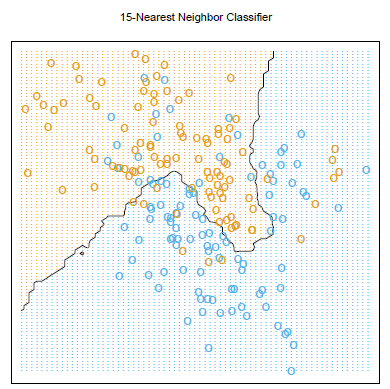
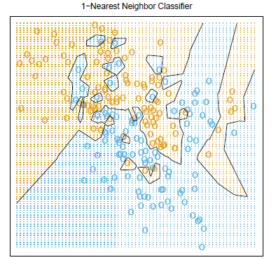
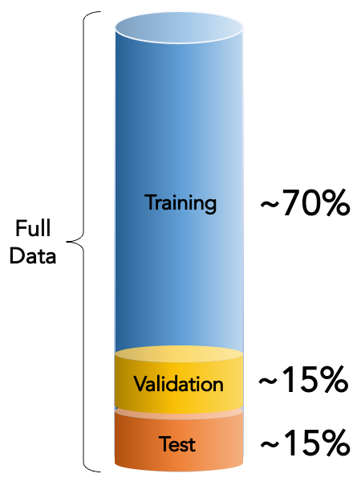
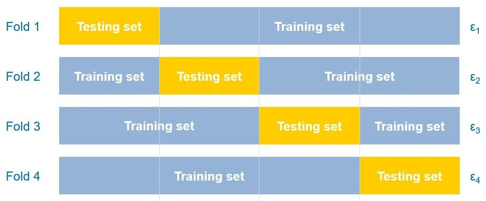
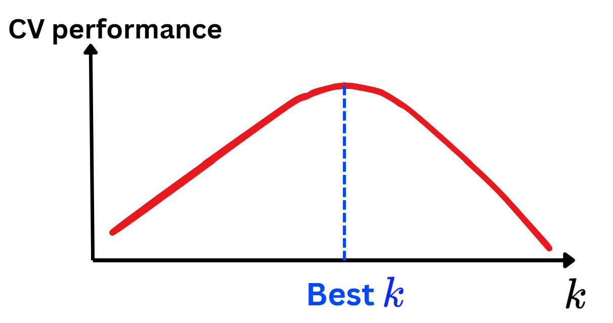

Logistic Regression is for classification problems.

Both models require an input-output formula or form.
Do we have something that
Works both for classification & regression?
DOESN’T assume any input-output formula for prediction?
Motivation & Introduction
Introduction
Models that DO NOT assume any input-output form for prediction are known as Non-parametric models.
In this case, the prediction is based on two main points
Similarity of input data (\(\color{blue}{\text{x}}\approx\color{red}{\text{x}_i}\)?)
Using the output of those similar points (\(\color{red}{y_i}\)) to predict the output of query point (\(\color{blue}{y}\)).
We use this idea all the time:
“You are the average of the five people you spend the most time with”—Jim Rohn.
“The sky is so dark, it’s going to be raining!”…
x1
x2
y
-0.752759
2.704286
1
1.935603
-0.838856
0
-0.546282
-1.960234
0
0.952162
-2.022393
0
-0.955179
2.584544
1
-2.458261
2.011815
1
2.449595
-1.562629
0
1.065386
-2.900473
0
-0.793301
0.793835
1
2.015881
1.175845
0
-0.016509
-1.194730
0
Euclidean distance
Euclidean distance
The core idea of some Non-parametric models is using the outputs of similar data points to predict any query point.
But what does similar or difference mean?
In ML, we often use distances to measure how difference the data points are.
The most common distance is the Euclidean one:
For example: \(A=(1,3,4)\) and \(B=(-1,2,5)\) then \[D(A,B)=\sqrt{(1-(-1))^2+(3-2)^2+(4-5)^2}=\sqrt{4}=2\ (\text{unit}).\]
For two input data \(\color{blue}{\text{x}=(x_1,x_2,...,x_d)}\) and \(\color{red}{\text{x'}=(x_1',x_2',...,x_d')}\) then the Euclidean distance between them is given by \[D(\color{blue}{\text{x}},\color{red}{\text{x}'})=\sqrt{\sum_{i=1}^D(\color{blue}{x_i}-\color{red}{x_i'})^2}.\]
Euclidean distance
For two input data \(\color{blue}{\text{x}=(x_1,x_2,...,x_d)}\) and \(\color{red}{\text{x'}=(x_1',x_2',...,x_d')}\) then the Euclidean distance between them is given by \[D(\color{blue}{\text{x}},\color{red}{\text{x}'})=\sqrt{\sum_{i=1}^D(\color{blue}{x_i}-\color{red}{x_i'})^2}.\]
🔑 Smaller distance = Closer the points = More similar the data.
x1
x2
y
-0.752759
2.704286
1
1.935603
-0.838856
0
-0.546282
-1.960234
0
0.952162
-2.022393
0
-0.955179
2.584544
1
Can you identify the most similar point to the first point based on its input?
What’s the label of that nearest point?
Assume that you know the labels and of all the points except for the first one.
🤔 How would you guess its label?
\(k\)-Nearest Neighbors (\(k\)-NN)
Given the training data: \(\{(\text{x}_1,y_1),\dots, (\text{x}_n,y_n)\}\subset \mathbb{R}^d\times{\cal Y}\).
If \(D\) is a distance on \(\mathbb{R}^d\) (e.g. Euclidean distance), \(\color{red}{\text{x}_{(k)}}\) is called the \(k\)-th nearest neighbor of \(\color{blue}{\text{x}}\in\mathbb{R}^d\) if its distance to \(\color{blue}{\text{x}}\) ranks \(k\)-th among all the input points, i.e.,
Let \(y_{(1)},\dots,y_{(n)}\) be the target of \(\text{x}_{(1)},\dots,\text{x}_{(n)}\) respectively.
If \(k\geq 1\), then \(k\)-NN predicts the target of an input \(\color{blue}{\text{x}}\) by
Regression:\[\begin{align*}\color{blue}{\hat{y}}&=\frac{1}{k}\sum_{j=1}^ky_{(j)}\\
&=\text{Average $y_{(j)}$ among the $k$ neighbors}.\\
&=\text{The predicted value.}\end{align*}\]
Classification with \(M\) classes:\[\begin{align*}\color{blue}{\hat{y}}&=\arg\max_{1\leq m\leq M}\frac{1}{k}\sum_{j=1}^k\mathbb{1}_{\{y_{(j)}=m\}}\\
&=\text{Majority group among the $k$ neighbors.}\\
&=\text{The predicted class.}\end{align*}\]
\(k\)-Nearest Neighbors (\(k\)-NN)
Example
Regression:\[\begin{align*}\color{blue}{\hat{y}}&=\frac{1}{k}\sum_{j=1}^ky_{(j)}\\
&=\text{Average $y_{(j)}$ among the $k$ neighbors}.\\
&=\text{The predicted value.}\end{align*}\]
Classification with \(M\) classes:\[\begin{align*}\color{blue}{\hat{y}}&=\arg\max_{1\leq m\leq M}\frac{1}{k}\sum_{j=1}^k\mathbb{1}_{\{y_{(j)}=m\}}\\
&=\text{Majority group among the $k$ neighbors.}\\
&=\text{The predicted class.}\end{align*}\]
\(k\)-Nearest Neighbors (\(K\)-NN)
Influence of \(K\)

Too large\(k\Leftrightarrow\) Using many points \(\Leftrightarrow\) too inflexible\(\Leftrightarrow\)Underfitting.

Too small\(k\Leftrightarrow\) Using less points\(\Leftrightarrow\) too flexible\(\Leftrightarrow\)Overfitting.
How to choose a good \(k\)?
Fine-tune \(k\)
Fine-tune \(k\)
Data splitting: Train/Validate/Test
A good model is the one that can generalize/predict new unseen data.
The first attempt: splitting the data into 3 parts.
Set
Common %
Purpose
Train
60%–70%
For training the model
Validation
15%–20%
Tune hyperparameters \(k\)
Test
15%–20%
Evaluate final model performance
In this case, the best\(k\) is the one achieving the best performance on Validation set.
The final performance is measured using the Test set.

Fine-tune \(k\)
Data splitting: \(K\)-fold Cross-Validation
In the previous splitting scheme, the best \(k\) depends strongly on the split.
To reduce this dependency, a more stable scheme is proposed called \(K\)-fold Cross-Validation technique.
Pseudocode
For \(\color{blue}{k}\)[1,2,3,...,N]:
For f in [1,...,K]:
Train \(k\)-NN on all data except for fold f.
Predict and measure performance on fold f.
Save the performance as \(\epsilon_f\).
Compute CV performance for \(\color{blue}{k}\): \[\text{CV}(\color{blue}{k})=\frac{1}{K}\sum_{f=1}^K\epsilon_f.\]
Choose the best \(k\) with the best CV performance.


Performance metrics
Performance metrics
Selecting the best \(k\) depends not only the splitting scheme, but also the performance metric to define WHAT DOES THE BEST MEAN?
What’s performance metric?
It’s a value that measures the quality of a model when using to predict new unseen observations.
They are divided into two main types:
Score: larger\(\Leftrightarrow\)better model.
Error: smaller\(\Leftrightarrow\)better model.
⚠️ Not to confuse:
Metric: For fine-tuning the key hyperparameters of the model (use validating or testing data when being measured).
Example: \(R^2\), Adjusted \(R^2\), Accuracy…
Loss: For training the model and is computed using the training data.
Example: Mean Squared Error (MSE), Mean Absolute Error (MAE)…
Performance metrics
Regression metrics
These are some common metrics in regression problems.
Mean Squared Error (MSE): \[\text{MSE}=\frac{1}{\text{n}_{\text{test}}}\sum_{i=1}^{\text{n}_{\text{test}}}(\color{blue}{y_i}-\color{red}{\hat{y}_i})^2.\]
Mean Absolute Error (MAE): \[\text{MAE}=\frac{1}{\text{n}_{\text{test}}}\sum_{i=1}^{\text{n}_{\text{test}}}|\color{blue}{y_i}-\color{red}{\hat{y}_i}|.\]
Root Mean Squared Error (RMSE): \[\text{RMSE}=\sqrt{\frac{1}{\text{n}_{\text{test}}}\sum_{i=1}^{\text{n}_{\text{test}}}(\color{blue}{y_i}-\color{red}{\hat{y}_i})^2}.\]
Mean Absolute Percentage Error (MAPE): \[\text{MAPE}=\frac{1}{\text{n}_{\text{test}}}\sum_{i=1}^{\text{n}_{\text{test}}}\left|\frac{\color{blue}{y_i}-\color{red}{\hat{y}_i}}{\color{blue}{y_i}}\right|.\]
Coefficient of Determination: \(R^2=1-\sum_{i=1}^{\text{n}_{\text{test}}}(\color{blue}{y_i}-\color{red}{\hat{y}_i})^2/\sum_{i=1}^{\text{n}_{\text{test}}}(\color{blue}{y_i}-\overline{\color{blue}{y}})^2.\)
Performance metrics
Classification metrics
These are some common metrics in classification problems.